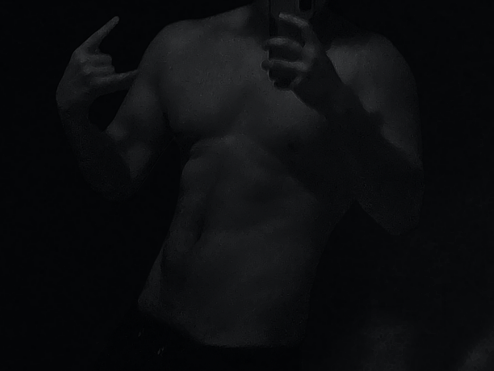

root@ruikez:~$ whoami
Ruikez
Born in the city, but lived the majority of my life in the mountains. I came to love neuropsychology and tinkering around with devices right at the beginning of my teenage years. Im a sucker for nature and tend to be analytical at times, but I know limits when it's due. Pretty much all I've gotta say here. Oh yeah, I'm taller than my parents. Also a sucker for nature and long walks.
